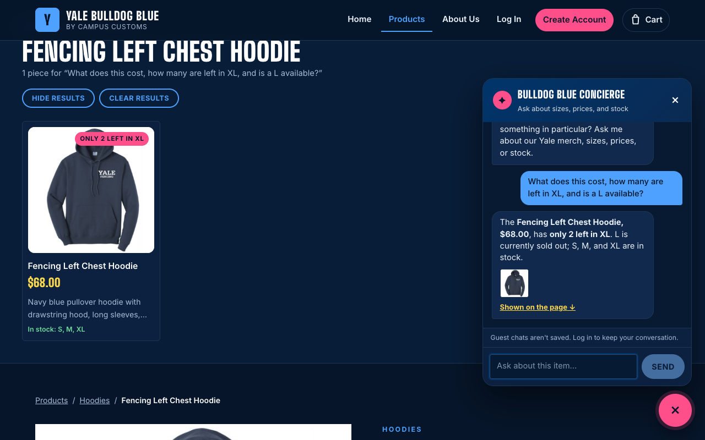
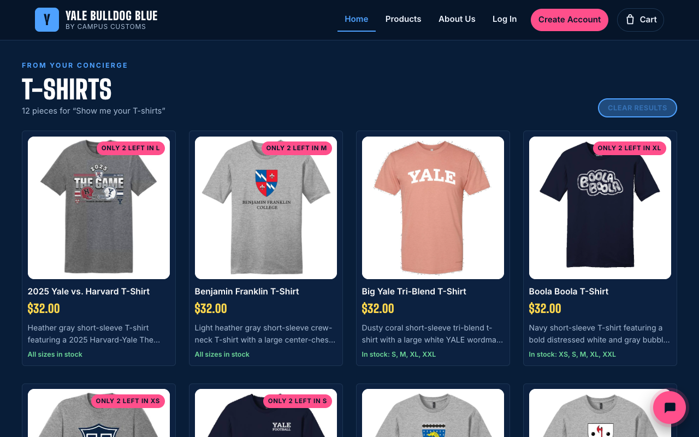
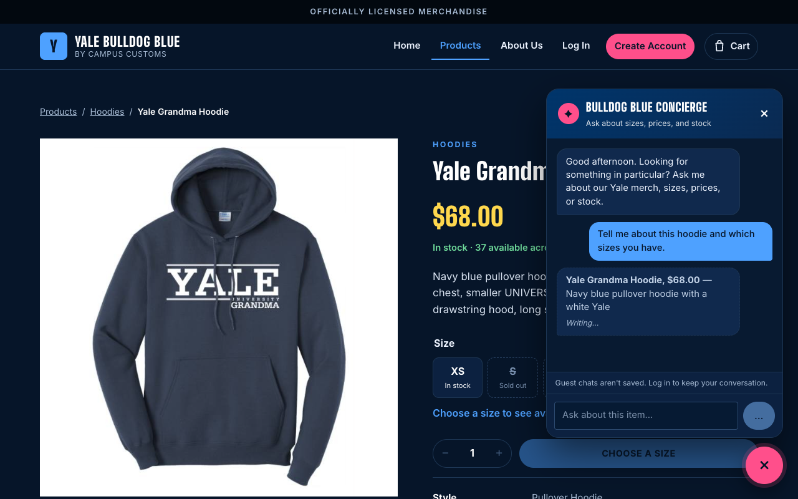
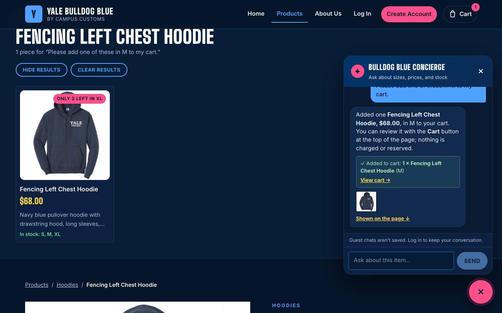
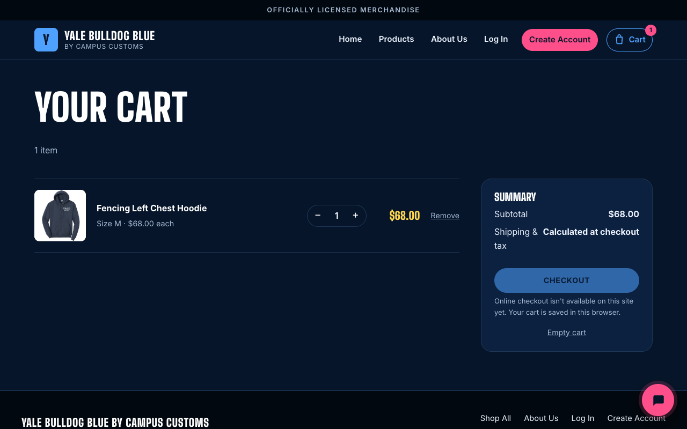
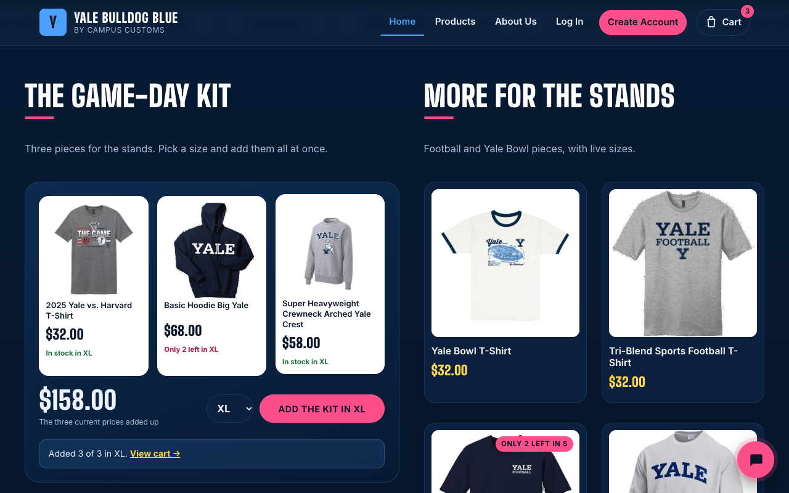
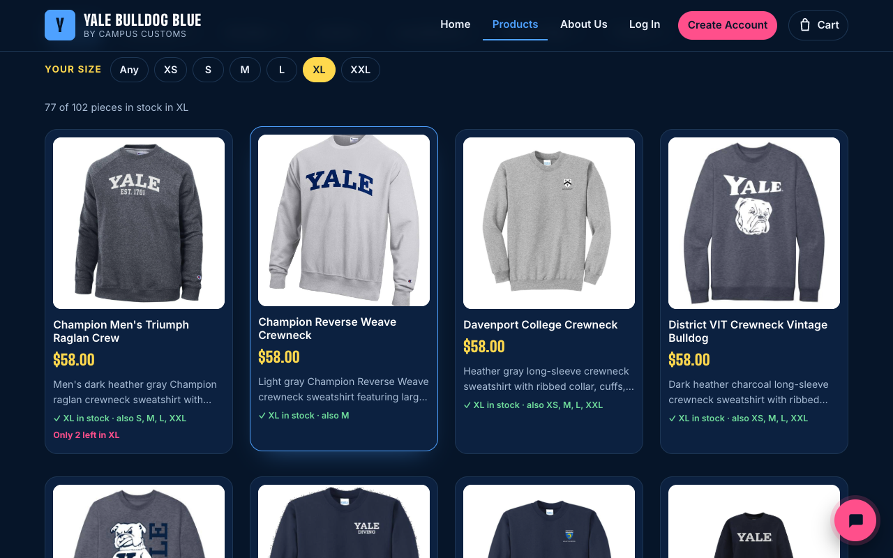
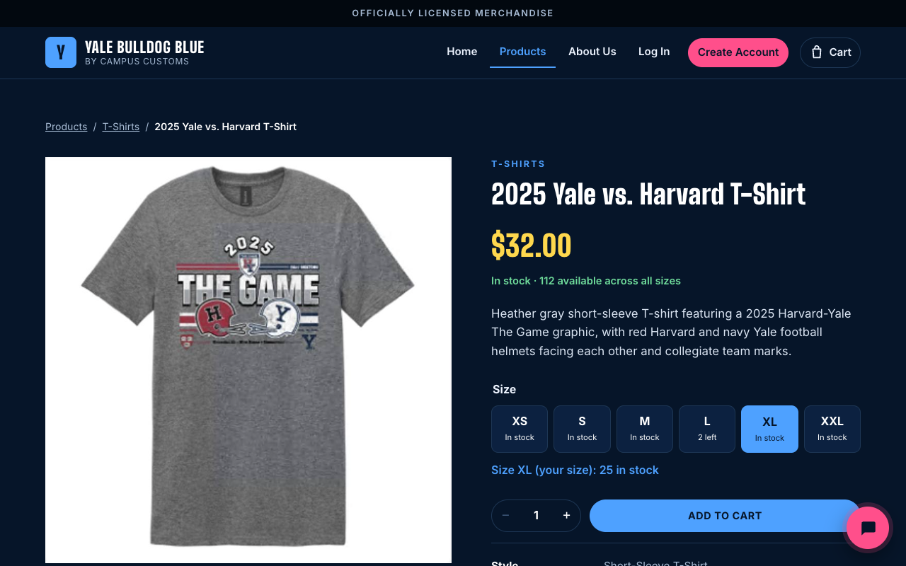

- ✅ 1. Chat checks an item's inventory (honest price and stock)
- ✅ 2. A category question fills the page with matching product cards
- ✅ 3a. Usability, backend (Problem 9): the reply streams in as it's written
- ✅ 3b. Usability, backend (Problem 9): the concierge adds an item to the cart
- ✅ 3c. The cart page shows what the concierge added
- ✅ 3d. Usability, front end (Problem 9): the Game-Day Kit, three pieces in one size with one click
- ✅ 3e. Usability, front end (Problem 9): Shop your size, showing only pieces in stock in my size
- ✅ 3f. Shop your size: the size is remembered and preselected on product pages
1. Chat checks an item's inventory (honest price and stock) PASS

On the Fencing Left Chest Hoodie page, the concierge quoted $68.00, said only 2 left in XL, and said L is sold out, which matches the database exactly (catalogue price $68.00; inventory XL = 2, L = 0).
Exact question and answer
Shopper: What does this cost, how many are left in XL, and is a L available?
Concierge: The Fencing Left Chest Hoodie, $68.00, has only 2 left in XL. L is currently sold out; S, M, and XL are in stock. Shown on the page ↓
2. A category question fills the page with matching product cards PASS

Asking “Show me your T-shirts” made a “T-SHIRTS” section appear on the page with 12 product cards (image, name, price, short info, sizes in stock). Every card is a T-shirt, and its price matches the database (12 of 25 T-shirts shown; 0 mismatches).
Exact question and answer
Shopper: Show me your T-shirts
Concierge: I've laid out 12 T-shirts from the collection for you, including Boola Boola T-Shirt, $32.00, with its bold navy-and-white graphic, and Big Yale Tri-Blend T-Shirt, $32.00, in dusty coral with white lettering. Would you like to narrow the selection by size or color? +8 12 pieces shown on the page ↓
3a. Usability, backend (Problem 9): the reply streams in as it's written PASS

Mid-answer screenshot: the concierge showed “Looking up the details…” after 2.3s, then the reply began writing itself in the dashed draft bubble at 6.7s, before the final answer at 11.5s. Shoppers see progress instead of a silent wait. The draft is shown before the answer check runs; the checked final answer then replaces it.
Exact question and answer
Shopper: Tell me about this hoodie and which sizes you have.
Concierge: (captured mid-stream: 110 characters written so far)
3b. Usability, backend (Problem 9): the concierge adds an item to the cart PASS

Asked to “add one of these in M,” the concierge checked live stock (M = 15 in the database), added it, and showed a green ✓ Added to cart note; the cart badge in the header changed to 1.
Exact question and answer
Shopper: Please add one of these in M to my cart.
Concierge: Added one Fencing Left Chest Hoodie, $68.00, in M to your cart. You can review it with the Cart button at the top of the page; nothing is charged or reserved. ✓ Added to cart: 1 × Fencing Left Chest Hoodie (M) View cart → Shown on the page ↓
3c. The cart page shows what the concierge added PASS

Following “View cart,” the cart holds exactly 1 × Fencing Left Chest Hoodie (size M) with a subtotal of $68.00, the database price, so the chat action really changed the shopper's cart.
3d. Usability, front end (Problem 9): the Game-Day Kit, three pieces in one size with one click PASS

Choosing XL shows each piece's live stock in that size (2025 Yale vs. Harvard T-Shirt: 25; Basic Hoodie Big Yale: 2; Super Heavyweight Crewneck Arched Yale Crest: 25 in the database), and one click added the 3 in-stock pieces (cart badge 3). The $158.00 total is the three database prices added up.
3e. Usability, front end (Problem 9): Shop your size, showing only pieces in stock in my size PASS

Tapping XL under “Your size” shows 77 of 102 pieces (“77 of 102 pieces in stock in XL”), exactly the 77 products with XL stock above 0 in the database, and every card confirms “✓ XL in stock”.
3f. Shop your size: the size is remembered and preselected on product pages PASS

After choosing XL on the Products page, opening the 2025 Yale vs. Harvard T-Shirt already has XL selected: “Size XL (your size): 25 in stock”. The shopper doesn't have to pick their size again.